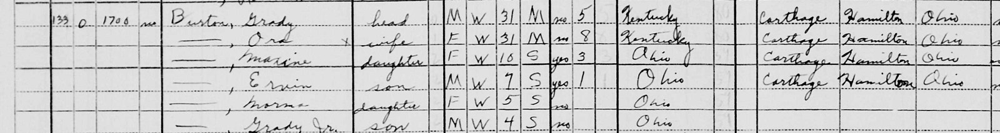
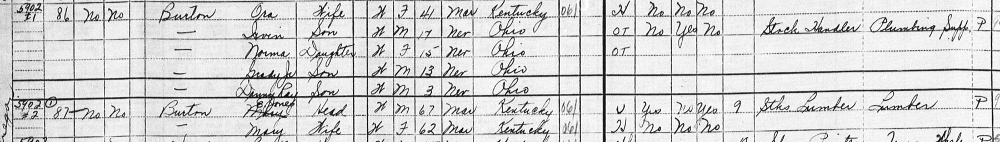
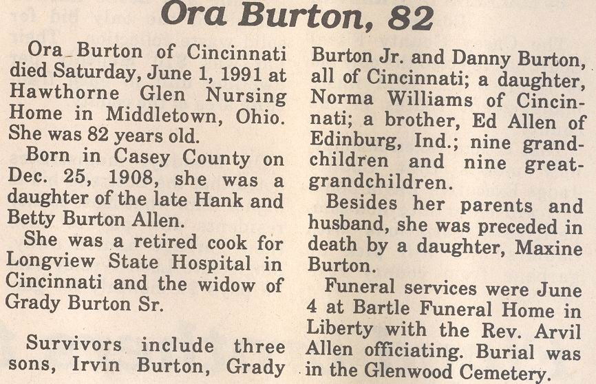

Maxine Burton (dates unresolved: existing profile/tree says 1929–1942; Whited Cemetery transcription lists 14 July 1930–30 March 1943, age 12, daughter of Grady Sr. and Ora)
Norma Justine (Burton) Williams (20 June 1934–20 June 1999; Whited Cemetery transcription identifies her as daughter of Grady Sr. and Ora)
Grady E. Burton Jr. (1936–2010)
Danny Ray Burton (living in 2010)
Conditional Ancestry Branch — Roy and Chumbley
A promising but not yet proven line may extend Irvin's ancestry through his father's possible parents. The 1950 census places an older E. Jones Burton and Mary Burton in an adjacent household to Ora and the children. A compiled family profile identifies Elihu Jones Burton and Mary Ellen Roy as a couple of matching ages. If they are Grady Elvis Burton Sr.'s parents, the maternal ancestry continues through Mary Ellen's reported mother, Martha Frances Chumbley, then Elias Brittain “Britt” Chumbley and Elizabeth Ellen “Nelly” Dunsmore, then Andrew Chumbley and Elizabeth “Betsy” Cadle, and further back to Robert Chumley and wife Elizabeth “Betsy” (maiden surname unknown).
The 2020 book Our Chumley Ancestry gives detailed census, marriage, land and Civil War record references for this Chumbley line. It identifies Elias Brittain as a son of Andrew and Elizabeth and records his Union Army service in the Kentucky 1st Cavalry. It explicitly states that Robert's wife Betsy's maiden surname is not established; the proposed Ford surname is unproven. Andrew later married Mary Elizabeth Jane “Jane” Goodin in 1866. His 1872 will names Jane as his wife and son Lewis, while 1870/1880 census transcriptions show other children whose parentage between the two marriages and a prior Goodin marriage is not yet settled; see the half-sibling research note.
Critical caveat: The first link—Elihu and Mary as Grady Sr.'s parents—has not yet been proven by a birth, census, death or other direct record. None of the Chumbley ancestors should be treated as established in Irvin's tree until that Burton parentage is confirmed. The exact 1950 census sheet for E. Jones and Mary is still needed.
Hamilton County Recorder deed indexes document a series of real-estate transactions by Irvin's parents, Grady and Ora Burton, from 1945 through 1966. The entries may represent several different parcels; they must not be treated as one continuous property without comparing the original deed descriptions.
28 April 1945: Charles William and Edna L. Karrer → Grady and Ora Burton, Book 2094, page 135 (purchase).
1 February 1946: Grady and Ora Burton → Arlington D. and Verna A. Fleenor, Book 2142, page 292 (sale).
January 1949: Harry and Myrtle Vickers → Grady and Ora Burton, Book 2355, page 3 (purchase; exact day not confirmed).
31 December 1953: Grady and Ora Burton → Ralph Hines and others, Book 2658, page 532 (sale).
15 December 1960: Grady and Ora Burton → Payton E. and Bobbie J. Hayes, Book 3131, page 674 (sale).
27 December 1960: Owen and Juanita Towne → Grady and Ora Burton, Book 3133, page 368 (purchase).
14 April 1961: Grady E. and Ora Burton → Earl L. and Helen M. McDonald, Book 3149, page 438 (sale).
16 May 1966: Allen C. and B. J. Berbar → Grady and Ora Burton, Book 3480, page 120 (purchase; seller spelling is the index/OCR form and needs deed-image verification).
The indexes do not supply street addresses or legal descriptions. The original instruments are still needed to identify the parcels and establish whether any were family residences. These are the parents' transactions, not proof that Irvin personally owned any of the properties.
1935 · age 2 Living with his family in Carthage, Hamilton County, Ohio
29 Apr 1940 · age 7 In school, living with his parents and sisters Maxine and Norma and brother Grady Jr. in Batavia Township, Clermont County, Ohio
3 Apr 1950 · age 17 Looking for work, last employed as a stock handler for a plumbing supply business; living with his mother, sister and brothers in Elmwood Place, Hamilton County, Ohio
Before 1987 Married Eunice E. Brewster
28 Sep 1974 · age 42 Social Security claim; living in Fairfield, Butler County, Ohio
16 Dec 1987 Eunice died suddenly at 56; Irvin is named as her husband, living in Hamilton, Ohio
1 Jun 1991 · age 58 His mother, Ora Burton, died; her obituary names him first among her three surviving sons
4 Mar 1994 · age 61 Died; buried beside Eunice at Rose Hill Burial Park, Hamilton, Section 11, Lot 191, Grave 4
Life Story
Irvin Burton is known to the family as the husband of Eunice E. Brewster, a daughter of Homer William Brewster Sr. and Sarah Hazel Kelly. When and where Irvin and Eunice married has not been found.
Irvin’s immediate family had a documented Cincinnati-area gospel-music history. His brother Grady Burton Jr.’s 2010 obituary says Grady began playing and singing gospel music with his family in 1944. Discography and record-collector sources document Burton Family releases in 1965, 1969, 1970, 1971, 1972 and 1975, followed by Cincinnati studio credits for Danny Burton and Charlene Burton in 1984. A first-person family comment identifies the group as including Grady Sr., Grady Jr. and their brother Danny; Betty also sang with the group. The 1984 Danny/Charlene credits may refer to Irvin’s brother Danny Ray and his wife Charlene, but that identity is not yet directly proved. No source names Irvin as a performer, singer or member of the group. A 1971 album-cover group image is linked in the family-photo archive; it is not an Irvin portrait. See the full music research note.
Eunice died suddenly on December 16, 1987, at the age of 56. Her death notice calls her the "beloved wife of Irvin Burton" and gives her home as Hamilton, Ohio. The same notice marks other men as "the late," but not Irvin, so he was still living at the time, most likely in Hamilton. Her funeral was arranged by the Hodapp Funeral Home of Carthage, and services were held at the Rose Hill Burial Park Chapel on Princeton Road in Hamilton.
The notice names Eunice's children as Demetria Sexton, Elaine Bishop and Anthony Q. Burton, and four grandchildren. The family knows all three as Irvin's children.
Irvin outlived Eunice by six years. His headstone gives his birth as September 6, 1932, and his death as March 4, 1994, and he lies beside her at Rose Hill Burial Park in Hamilton, Section 11, Lot 191. He was the son of Grady Elvis Burton Sr. and Ora Alice (Allen) Burton, both born in Kentucky in 1908. The 1940 census confirms them as husband and wife; Find a Grave reports a 1927 marriage, but no original marriage record has been located, so the year remains unverified. His brother Grady Jr.'s obituary names Irvin as a brother, along with sisters Maxine and Norma and a younger brother, Danny Ray, and says the family began singing gospel music together in 1944.
The census shows his childhood. In 1935 the family lived in Carthage, just north of Cincinnati. By April 1940 they owned a home in Batavia Township, Clermont County, where his father worked as a laborer in candle making and seven-year-old Irvin, listed as "Ervin," was in the first grade. Ten years later, in April 1950, Irvin was 17 and looking for work; his last job had been as a stock handler for a plumbing supply business. He lived with his mother, his sister Norma and his brothers Grady Jr. and Danny Ray at 5902 in Elmwood Place, Hamilton County. A couple listed next door, E. Jones Burton, 67, and Mary, 62, both born in Kentucky, may be his paternal grandparents. Their names and ages match the possible Elihu Jones Burton and Mary Ellen (Roy) Burton found in compiled family material, but the census does not state a relationship and no direct record yet connects them to Grady Sr.; this remains an unproved lead.
When his mother Ora died on June 1, 1991, her obituary listed him first among her surviving sons, "Irvin Burton, Grady Burton Jr. and Danny Burton, all of Cincinnati." The same clipping identifies Ora's parents as "the late Hank and Betty Burton Allen" and names her brother Ed Allen of Edinburg, Indiana; Hank's full given name has not been established. The Ohio death index records Irvin at his death in 1994 as married, a carpenter in the construction trade, with twelve years of schooling; it gives his birthplace as Cincinnati and his mother's maiden name as Allen. Because Eunice died in 1987, the index's married status raises the possibility of a later spouse, but it does not identify one and could reflect an indexing or reporting error. Public-record entries place Irvin in Hamilton, Ohio, in 1986 and 1993, and his Social Security record gives ZIP 45014; these are the latest documented residence clues, not proof of his exact address on the day he died. A Casey County cemetery transcription for Whited Cemetery separately lists Grady Burton Sr. (7 September 1908–1 August 1990), Ora (25 December 1908–1 June 1991) as his wife, and their daughters Maxine (14 July 1930–30 March 1943) and Norma J. Burton (20 June 1934–20 June 1999). A separate Glenwood Cemetery transcription lists “Burton Ora Allen” with the same exact dates, matching Ora's obituary statement that she was buried at Glenwood. This makes Glenwood the better-supported location for Ora, although the conflicting Whited entry still requires a cemetery register or marker image to resolve. The cemetery transcription also conflicts with the dates currently carried for Maxine in the family tree, so her dates need confirmation from a readable marker or original record.
Photo Gallery
His headstone: "Hebrews 13:8 · Jesus Christ is the same yesterday, today and forever · Irvin D. Burton · Sept. 6, 1932 – March 4, 1994," Rose Hill Burial Park, Hamilton, Ohio, beside Eunice. Photo by Frank Flack, Find a Grave

1940 census, Batavia Township, Clermont County, Ohio, sheet 7A, lines 7–12: Grady, Ora, Maxine, "Ervin," 7, Norma and Grady Jr. US Census image via FamilySearch

1950 census, Elmwood Place, Hamilton County, Ohio, sheet 28: Irvin, 17, looking for work, last job stock handler, with his mother Ora, Norma, Grady Jr. and Danny Ray. The index identifies an adjacent E. Jones and Mary Burton household on sheet 18 in the same ED; that original sheet has not yet been retrieved, and their relationship is unproven. US Census image via FamilySearch

His mother Ora Burton's obituary, June 1991, naming "three sons, Irvin Burton, Grady Burton Jr. and Danny Burton." Clipping added by Rochelle Riordan, Find a Grave
Sources and Evidence
Death notice of Eunice E. Burton (née Brewster), died 16 December 1987, age 56, residence Hamilton, Ohio: "beloved wife of Irvin Burton"; children Demetria Sexton, Elaine Bishop, Anthony Q. Burton; Hodapp Funeral Home, 7401 Vine St., Carthage; services at Rose Hill Burial Park Chapel, 2421 Princeton Rd., Hamilton (newspaper clipping in the family collection)
Couple profile, Homer William Brewster Sr. × Sarah Hazel Kelly: Eunice married Irvin Burton
Find a Grave memorial 176614576, Irvin David Burton, 6 Sep 1932 – 4 Mar 1994, Rose Hill Burial Park, Hamilton, Ohio, Section 11, Lot 191, Grave 4; headstone photo (Frank Flack) reads "Irvin D. Burton · Sept. 6, 1932 – March 4, 1994 · 11-191-4"
Obituary of Grady E. Burton Jr. (4 April 1936 – 16 February 2010), on Find a Grave memorial 48325709: "the son of Grady Elvis Sr. and Ora (Allen) Burton"; predeceased by "two sisters, Maxine Burton and Norma Williams; and a brother, Irvin Burton"; survived by a brother, Danny Ray Burton of Loveland
Grady Burton Jr. obituary, Journal-News, 19 Feb 2010: says Grady began playing and singing gospel music with his family in 1944; identifies his parents as Grady Elvis Sr. and Ora (Allen) Burton; names Irvin as a deceased brother. The obituary supports a family gospel tradition, but does not identify Irvin as a performer.
GJ Artist Discography: Gospel Singing Burton Family, Cincinnati group, lists 16 records including a 1963 45 EP, 1964 album The Gospel Singing Burton Family Sings With C.E. Dozier, and 1965 release Homecoming Day; it indexes songs and matrix numbers.
Discogs artist discography for The Burton Family lists releases dated 1960, 1962–1966, 1969 and 1970, with the 1964 C.E. Dozier album and later group releases. This is a collector-maintained catalog; use for leads and release identification, not proof of individual membership.
The Good, Bad & Ugly Gospel Record Barn, “Homecoming Day – The Gospel Singing Burton Family”: describes the family group’s mailing hometown as Fairfield, Ohio, and tentatively names Grady Burton Sr., Grady Burton Jr., Betty Burton and Danny Burton as some participants. The writer explicitly hedges the lineup (“If I remember correctly”); no claim is made here that Irvin performed; the suggested lineup is tentative.
Find a Grave memorials for Grady E. Burton Sr. (7 Sep 1908 Kentucky – 1 Aug 1990 Butler County, Ohio) and Ora Alice (Allen) Burton (25 Dec 1908 Kentucky – 1 Jun 1991 Butler County, Ohio), married 1927, buried Whited Cemetery, Liberty, Casey County, Kentucky
United States Census, 1940, Batavia Township, Clermont County, Ohio, ED 13-4, sheet 7A, lines 7–12, enumerated 29 April 1940: Grady Burton, head, 31, b. Kentucky; Ora, wife, 31, b. Kentucky; Maxine, 10; Ervin, son, 7, b. Ohio, in school; Norma, 5; Grady Jr., 4; all living in Carthage, Hamilton County, in 1935 (FamilySearch index; image, read)
United States Census, 1950, Elmwood Place, Hamilton County, Ohio, ED 31-69, sheet 28, lines 1–5, 3 April 1950: Ora Burton, 41, married, b. Kentucky; Irvin, son, 17, never married, b. Ohio, looking for work, last occupation stock handler, plumbing supply; Norma, 15; Grady Jr., 13; Danny Ray, 3. Lines 6–7: E. Jones Burton, 67, and Mary, 62, b. Kentucky (FamilySearch index; image, read)
Ohio, Death Index, 1908–1932, 1938–1944, and 1958–2007, Irvin D Burton: born 6 Sep 1932, Cincinnati; died 4 Mar 1994, Hamilton, Butler County, age 61; married; carpenter, construction; 12 years of school; father's surname Burton, mother's Allen; certificate 017200, vol. 29741 (index of the state certificate; no image)
United States, Social Security Death Index, Irvin D Burton: born 6 Sep 1932, died 4 Mar 1994, last residence Butler County, Ohio (45014)
United States, Social Security NUMIDENT, 1936–2007, Irvin D Burton: born 6 Sep 1932, died 4 Mar 1994; claim 28 Sep 1974, residence Fairfield, Butler County, Ohio
Obituary of Ora Burton, 82, died 1 June 1991 at Hawthorne Glen Nursing Home, Middletown, Ohio; born Casey County, Kentucky, 25 Dec 1908; widow of Grady Burton Sr.; survivors "three sons, Irvin Burton, Grady Burton Jr. and Danny Burton, all of Cincinnati"; daughter Norma Williams; preceded in death by a daughter, Maxine (newspaper clipping, paper not named, on Find a Grave memorial 23174855, added by Rochelle Riordan)
Casey County KYGenWeb, Whited Cemetery transcription, Burton entries: Grady Burton Sr. (7 Sep 1908–1 Aug 1990); Ora (25 Dec 1908–1 Jun 1991), wife of Grady; Maxine (14 Jul 1930–30 Mar 1943), daughter of Grady Sr. and Ora; Norma J. Burton (20 Jun 1934–20 Jun 1999), daughter of Grady Sr. and Ora. This is a cemetery transcription, not a photograph of the markers; it conflicts with the currently listed Maxine dates (1929–1942) and with Ora's obituary burial statement (Glenwood Cemetery). Whited Cemetery, B surnames.
Casey County KYGenWeb, Whited Cemetery, T–Z surname transcription: Norma J. Burton (20 Jun 1934–20 Jun 1999), identified as daughter of Grady Sr. and Ora. This is a cemetery transcription, not a marker photograph. Whited Cemetery, T–Z surnames.
United States, Public Records, 1970–2009, Irvin D Burton, born 6 Sep 1932: Hamilton, Ohio, 1986 and 1993–2000; Dry Ridge, Kentucky, 2000–2001 (a compiled database; the dates after 1994 do not fit his death)
Ora Burton obituary clipping, June 1991 (newspaper not identified), preserved on Find a Grave memorial 23174855: identifies her parents as "the late Hank and Betty Burton Allen" and names her brother Ed Allen of Edinburg, Indiana; the clipping does not give Hank's full given name.
Person Archive
Browse the records and materials preserved for Irvin David Burton in the American Bloodline Master Archive.
Residence: Carthage, Hamilton County, Ohio, 1935; Batavia Township, Clermont County, Ohio, 1940; Elmwood Place, Hamilton County, Ohio, 1950 (censuses) Fairfield, Butler County, Ohio, 1974 (Social Security); Hamilton, Butler County, Ohio, about 1987–1994
Living: Alive on 16 December 1987, as his 1994 death date confirms
Education: 12 years of school (Ohio death index, 1994)
Birth and death dates now agree across his headstone, the Ohio death index, the Social Security Death Index and the Social Security NUMIDENT. Parents are named by the 1940 census, his mother's 1991 obituary and the death index (mother's surname Allen).
Ohio death certificate no. 017200 (1994), from the Ohio Department of Health or Butler County Probate: would give his exact address, cause of death, informant and spouse status. Paid; not ordered.
Hamilton Journal-News, March 1994: his obituary, which may name his children and any second wife. GenealogyBank lists obituary hits for an Irvin Burton; paid, not opened.
Marriage to Eunice: no Ohio or Kentucky marriage record found on FamilySearch. Next: Hamilton County and Butler County Probate Court marriage records, about 1950–1965.
Death index says "married" in 1994, six years after Eunice died. He may have remarried, or the informant gave his status loosely.
In 1950 his father is not on the household lines with Ora and the children. A note on the sheet says two names belonging to the unit were entered on another sheet, and FamilySearch indexes a "Gerdy Burton," 41, married, b. Kentucky, on page 18 of the same district.
E. Jones Burton (67) and Mary (62) next door in 1950 fit Elihu Jones Burton (1883–1951) and Mary Ellen (Roy) Burton (1887–1956), named on Find a Grave as Grady Sr.'s parents. This identification remains unproved because the 1950 census does not state a relationship and no direct record yet links them to Grady Sr.
Residence conflict: his mother's 1991 obituary places all three sons "of Cincinnati," while Eunice's 1987 notice, the Social Security records and his death place him in Hamilton and Fairfield, Butler County. "Cincinnati" may be loose usage for the area.
Burial conflict for his mother: her 1991 obituary says Glenwood Cemetery, and the Casey County Glenwood transcription independently lists “Burton Ora Allen” with matching dates (25 Dec 1908–1 Jun 1991). The Whited Cemetery transcription also lists an Ora with the same dates as Grady Burton Sr.’s wife. The evidence now leans toward Glenwood, but the duplicate Whited entry remains unresolved pending an interment register or marker photograph.
A compiled public-records listing puts an Irvin D. Burton born 6 Sep 1932 at Dry Ridge, Kentucky, in 2000–2001, after his death. Probably a data error or a relative using the address; not relied on.
Burton family gospel activity: Grady Jr.'s 2010 obituary says he began playing and singing with his family in 1944; Cincinnati group discographies list releases in 1962–1970. Available sources consulted do not identify Irvin in the group lineup; Irvin's own musical participation remains unproved. Do not infer it from being a Burton or a family member.
Late-life status: Ohio death-index entry says Irvin was "married" when he died in 1994, seven years after Eunice. No spouse is named in that index. A later marriage is a possibility, not an established fact; full death certificate 017200 or a 1994 obituary/court record may resolve it.
Name variant: family list labels him "Irving Burton," while his headstone, death index, Social Security records, census records, and Eunice's death notice use Irvin or Irvin D. Burton. Retain the source-specific spellings; no document reviewed establishes Irving as his legal/full given name.
His family sang gospel music from 1944 (brother Grady Jr.'s obituary). Recordings by "The Burton Family" of Cincinnati from the 1960s list Grady Sr., Grady Jr. and Danny; Irvin is not named in the lineups found. A 1966 record credits a song to an Elaine Burton, possibly his daughter Elaine.
Photos: no portrait of Irvin found on FamilySearch (Memories empty), Geni (no media) or Find a Grave (headstone only). His headstone stays as the profile picture. Not checked: MyHeritage, Ancestry member trees, yearbooks.
No Korean War service found in the Butler County Historical Society Korean War list; no WikiTree profile found.
DNA
No DNA matches linked yet.
Family Notes
No family-notes link is listed on this profile.
Profile history: Updated 25 November 2026: added Norma's exact dates from the Whited Cemetery transcription, clarified Irvin's latest documented Hamilton residence, and flagged the unresolved 1994 married-status discrepancy and conflicting Maxine dates. Updated 17 November 2026: photos and sources added. Updated 10 November 2026: Demetria, Elaine and Anthony listed as his children; tree links and folder added. Updated 10 November 2026: parents and siblings added from his brother's obituary; full name Irvin David; marriage moved from Quick Facts to the Spouse card. Updated 7 November 2026: Anthony Q. Burton linked to his profile Doc and ruled Irvin's son. Updated 6 November 2026 from Eunice's 1987 death notice, the family couple profile, and his Find a Grave memorial and headstone.